Quand on pense à la création d’un jeu vidéo, on imagine souvent un développeur qui code dans le noir avec une canette Monster à la main.
En réalité, c’est beaucoup (beaucoup) plus vaste.
Un jeu, c’est un travail d’équipe : designers, artistes, programmeurs, musiciens, testeurs, chefs de projet... chacun apporte sa pièce au puzzle.
Et pourtant... certains s’embarquent dans l’aventure en solo.
Oui, on parle des développeurs indé, ces équilibristes du jeu vidéo qui jonglent entre tous les métiers à la fois.
Mais pas de panique, on leur consacrera une section un peu plus bas.
Spoiler : ils méritent une médaille.
Un jeu vidéo, c’est pas juste du gameplay et des graphismes. C’est une mini-entreprise créative où chaque poste joue un rôle essentiel.
Dans ce chapitre, on va explorer les grandes familles de métiers du jeu vidéo, de la conception artistique à la production, en passant par la programmation et le son.
Tu verras qu’il y a bien plus que des lignes de code derrière ton jeu préféré.
Les développeurs sont les architectes du gameplay.
Ce sont eux qui transforment les idées, parfois floues ou grandioses, en une réalité numérique jouable et cohérente.
Ils traduisent la vision créative des game designers en une mécanique tangible, en écrivant des lignes et des lignes de code.
Chaque action que tu effectues dans un jeu — sauter, attaquer, ouvrir une porte, changer de niveau — a été pensée, codée, testée et optimisée par un ou plusieurs développeurs.
Le développeur gameplay est sans doute celui qu’on associe le plus directement au cœur du jeu.
Il conçoit toutes les interactions possibles : les sauts, les combats, la gravité, la vitesse de déplacement, les objets à ramasser...
Chaque sensation de jeu passe entre ses mains.
Grâce à lui, un bouton pressé se transforme en action précise à l’écran.
Ensuite, il y a le développeur IA, spécialiste de l’intelligence artificielle.
C’est lui qui donne vie aux ennemis, aux personnages non-joueurs (PNJ), et à tout ce qui interagit "intelligemment" avec toi.
Si un ennemi te traque dans l’ombre, ou si un boss change de stratégie quand tu lui enlèves la moitié de sa vie, c’est grâce à l’IA qu’il a programmée.
Voici, ci-dessus , un exemple de code Python illustrant le travail du développeur IA : l’intelligence artificielle permet à l’ennemi de se déplacer automatiquement vers le joueur, en adaptant sa trajectoire à chaque instant. Ce type d’algorithme, programmé par le développeur IA, donne vie aux ennemis et rend leur comportement dynamique et réactif dans le jeu, comme décrit dans le paragraphe ci-dessus.
Le développeur backend, quant à lui, agit dans les coulisses.
On le voit rarement, mais son travail est essentiel.
Il gère les bases de données, les serveurs, les connexions entre joueurs, les sauvegardes, les mises à jour...
En ligne, il garantit la stabilité de l’expérience.
Sans lui, un jeu multijoueur s’écroule en quelques secondes.
Le backend : l'infrastructure invisible qui maintient le jeu en ligne fluide et stable.
Parmi les outils les plus utilisés par les développeurs, on retrouve les moteurs de jeu comme Unity (qui utilise le langage C#), Unreal Engine (très puissant, basé sur le C++ et un système visuel appelé Blueprint), ou encore Godot (qui repose sur un langage proche de Python : GDScript). Ces moteurs permettent de construire des univers entiers, de gérer la physique, les animations, les sons... et bien sûr, d'intégrer tout le code du jeu.
Ici , tu peux voir l'interface de l'éditeur de l'éditeur de matériaux d'Unreal Engine : (1) la barre de menu principale donne accès aux fonctions globales du logiciel ; (2) la barre d’outils contextuelle propose des raccourcis pour des actions fréquentes comme sauvegarder ou prévisualiser ; (3) la fenêtre de prévisualisation affiche le rendu du matériau sur un objet 3D ; (4) le panneau des propriétés permet de configurer les paramètres du matériau sélectionné ; (5) l’éditeur de graphes de matériaux est l’espace principal où les nœuds sont connectés pour définir l’apparence du matériau ; (6) la section des statistiques affiche des informations techniques sur le shader ; (7) enfin, la palette de nœuds propose l’ensemble des nœuds disponibles à ajouter au graphe pour enrichir la création du matériau.
Les Artistes – Ceux qui rendent tout beau (ou pas, si on veut un style moche et décalé)
Les artistes sont les créateurs de l’univers visuel d’un jeu vidéo.
Leur rôle est de donner une âme graphique au projet, de créer une ambiance, une identité visuelle forte.
Que ce soit un jeu ultra-réaliste, un univers cartoon, un style rétro pixelisé ou un monde complètement barré, c’est à eux qu’on doit cette esthétique.
L’apparence d’un jeu peut tout changer : elle peut attirer instantanément le joueur ou, au contraire, le faire fuir.
Mais parfois, un style "moche" ou décalé est totalement assumé, et devient même une signature !
Le Character Designer est chargé d’imaginer et de dessiner les personnages du jeu.
Le héros que tu incarnes, les ennemis que tu affrontes, les créatures bizarres ou les PNJ attachants... tout vient de son imagination.
Il s’assure que chaque personnage ait un look unique et marquant, en cohérence avec l’univers du jeu.
Le Level Designer, lui, ne se contente pas de dessiner des décors : il conçoit des niveaux entiers.
Il pense les environnements comme des terrains de jeu, en jouant sur la difficulté, l’exploration, le rythme et les surprises.
Si tu galères à travers un labyrinthe ou que tu découvres un passage secret bien planqué, c’est son travail qui est en jeu.
Quant au Concept Artist, il intervient très tôt dans la création.
Il dessine des esquisses, des idées, des ambiances... avant même que le jeu ne prenne forme.
Ses dessins servent de guide aux autres membres de l’équipe.
C’est un peu le cartographe du monde à venir, celui qui donne une première vision du projet.
Pour créer tout cela, les artistes s’appuient sur des outils puissants.
Blender, Maya et ZBrush sont utilisés pour la modélisation 3D, tandis que Photoshop ou Procreate sont parfaits pour le dessin 2D et les textures.
Chaque outil permet de sculpter, peindre, animer et construire les visuels qui feront vibrer le joueur.
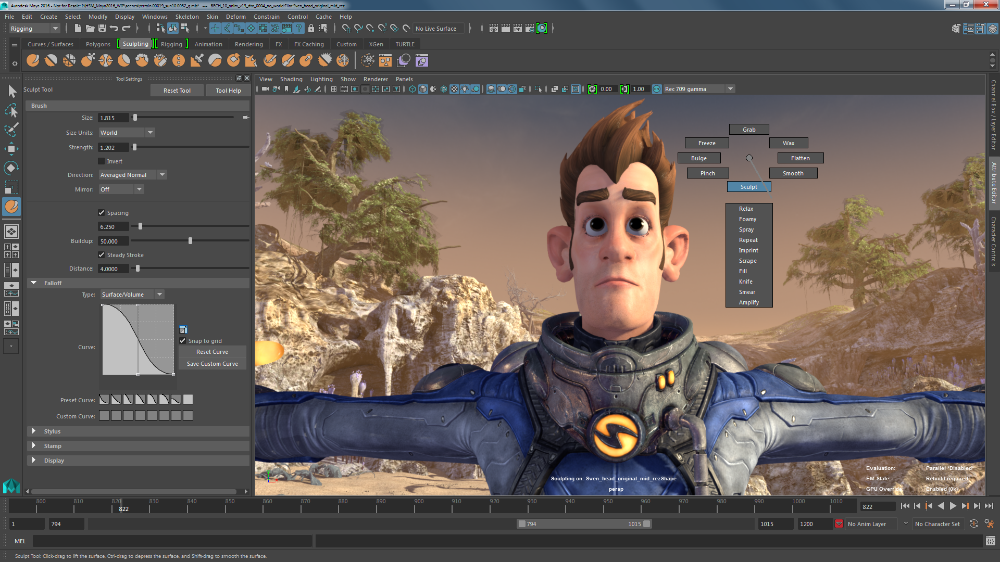
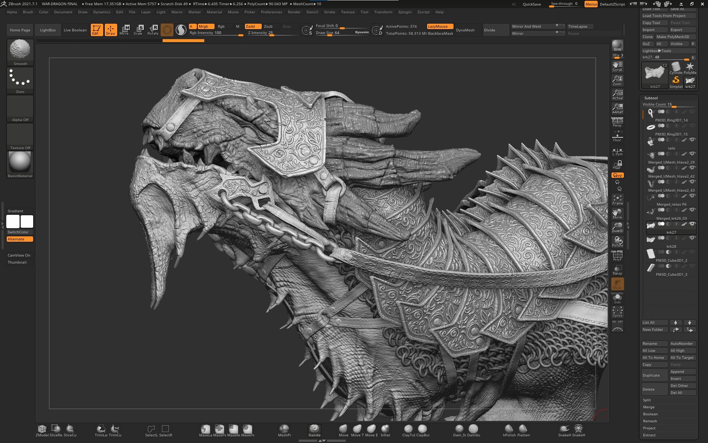
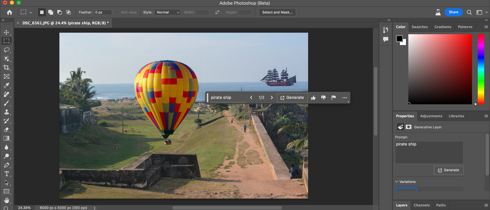
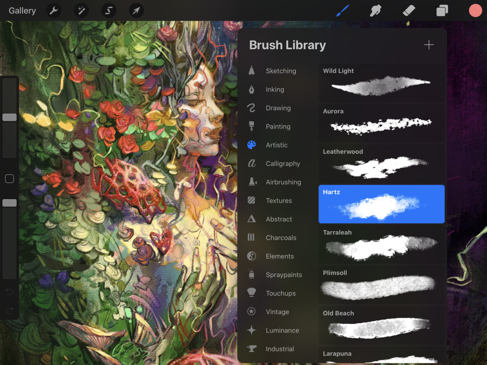
Ci-dessus , tu peux voir les différentes interfaces des outils que je t'ai présentés (dans l'ordre : Blender, Maya, ZBrush, Photoshop et enfin Procreate).
Les Sound Designers – Les Architectes du Son
Ah, les sound designers !
Ce sont les maîtres du son, ceux qui donnent une véritable dimension sensorielle au jeu.
Si tu as déjà joué à un jeu sans bruitages ou avec une musique totalement décalée, tu sais à quel point l’expérience peut vite devenir fade, voire gênante.
Dans un jeu vidéo, le silence peut avoir un rôle, mais il ne doit jamais être là par accident.
Les sound designers veillent à ce que chaque ambiance sonore soit cohérente, immersive et expressive.
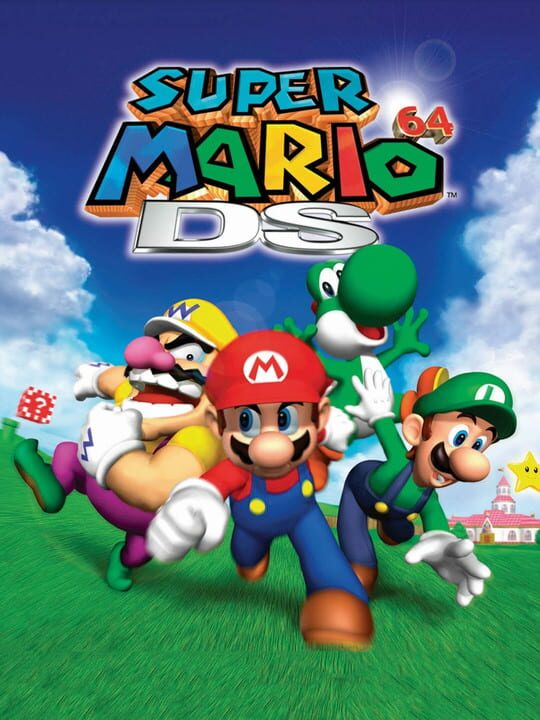
Un thème iconique qui évoque des souvenirs nostalgiques (pour moi en tout cas) des premières aventures de Mario sur la Nintendo 64 et les Nintendo 2DS et 3DS .
Leur première mission est la création des effets sonores.
Chaque bruit – qu’il s’agisse d’un pas sur la neige, d’un coup d’épée, d’un cri d’ennemi ou d’une explosion – est soigneusement conçu.
Ces sons sont parfois enregistrés en studio, parfois fabriqués à partir de sons du quotidien modifiés ou mixés pour obtenir un rendu unique.
Créer une ambiance sonore, c’est façonner l'âme invisible d’un monde.
Ensuite, il y a la composition musicale.
La musique d’un jeu donne le ton, l’émotion, le rythme.
Imagine Mario sans ses célèbres mélodies ou un jeu d’horreur avec une musique joyeuse : ça ne marcherait pas !
Le compositeur travaille main dans la main avec l’équipe artistique pour créer une bande-son qui colle parfaitement à l’univers et au gameplay.
Capture d’écran de la composition d’une musique orchestrale pour un jeu vidéo, réalisée sur FL Studio. Cordes, cuivres et effets sont agencés pour renforcer l’intensité narrative.
Enfin, ils s’occupent de l’ambiance sonore globale.
Cela signifie qu’ils équilibrent les volumes, les transitions, les effets spéciaux, pour que tout soit harmonieux.
Ils évitent par exemple que le son d’un menu couvre celui d’une cinématique importante, ou que les tympans du joueur explosent lors d’une scène trop bruyante.
Leur rôle est donc aussi technique que créatif.
Comment Toby Fox a composé la musique d'Undertale ?
Dans cette vidéo , tu peux découvrir comment Toby Fox a composé la musique d’Undertale avec des outils simples comme FL Studio et un vieux clavier.
Il y explique comment il a utilisé des motifs musicaux récurrents (les leitmotivs) pour renforcer l’émotion et l'identité des personnages, comment il a limité volontairement les instruments pour coller au style rétro, et comment chaque thème s’intègre parfaitement dans la narration du jeu.
Une belle démonstration de créativité, même sans gros moyens techniques.
Pour tout ça, les sound designers utilisent des logiciels spécialisés comme Pro Tools (référence dans l’industrie du son), FL Studio (très utilisé pour la composition), ou encore Audacity (simple mais efficace pour certaines tâches de montage ou nettoyage audio).
Les Game Designers – Les Architectes du Fun
Le Game Designer, souvent surnommé "GD", est un peu le chef d’orchestre de l’expérience de jeu.
Si les développeurs sont les mains qui fabriquent, lui est l’esprit qui imagine.
C’est à lui qu’on doit les mécaniques qui rendent un jeu addictif, fluide, et surtout fun.
Il ne code pas forcément, mais il définit les règles, les systèmes et les dynamiques qui vont donner vie à l’univers du jeu.
Le game designer commence par poser les bases : quelles sont les actions possibles ?
Peut-on sauter ?
Courir ?
Parler à un PNJ ?
Lancer une attaque spéciale ?
Il décide aussi des objectifs principaux : terminer un niveau, résoudre une énigme, battre un boss...
C’est lui qui donne un sens à chaque action du joueur.
Il est aussi en charge de l’équilibrage.
Un bon jeu doit être ni trop facile (sinon on s’ennuie), ni trop dur (sinon on rage-quit).
Le game designer travaille donc sur une courbe de difficulté progressive, qui garde le joueur engagé sans le décourager.
Il ajuste les points de vie des ennemis, la fréquence des récompenses, le rythme des niveaux... tout est calculé pour maintenir une tension agréable.
Enfin, il conçoit les interactions avec l’environnement.
Que se passe-t-il quand on ouvre un coffre ?
Peut-on déplacer un objet pour résoudre une énigme ?
Les dialogues avec les PNJ changent-ils en fonction des choix du joueur ?
Ces détails, souvent invisibles au premier abord, participent à rendre le monde vivant et cohérent.
Le métier de Game Designer
Pour organiser toutes ces idées, le game designer utilise souvent des outils comme des spreadsheets (tableurs pour équilibrer les stats), Miro (pour faire des schémas ou cartes mentales), ou encore Trello (pour suivre les tâches de l’équipe).
Les Testeurs (QA) – Les Héros du Debug
Tu sais déjà (cf. chapitre précédent) que les tests sont indispensables tout au long du développement.
Les retours joueurs, les rapports de bugs, les suggestions... tout ça est crucial.
Mais derrière ces données, il y a les testeurs QA : celles et ceux qui passent leurs journées à retourner le jeu dans tous les sens.
Leur mission, ce n’est pas juste de repérer les gros bugs visibles : c’est aussi de dénicher les failles invisibles, celles qui apparaissent quand tu fais une action improbable ou quand tu testes un niveau pour la 48e fois d’affilée.
Ce sont les gardiens du détail, les protecteurs de la fluidité, et parfois... les premiers joueurs à vraiment "vivre" le jeu dans sa totalité.
Le métier a bien évolué : aujourd’hui, les testeurs collaborent directement avec les développeurs et les game designers pour affiner les mécaniques, corriger les incohérences de gameplay et ajuster la difficulté.
Ils utilisent des outils de suivi (Jira, TestRail...) et rédigent des rapports précis pour chaque anomalie détectée.
Une journée dans la peau d’un testeur QA
D’ailleurs, certains studios font appel à des profils atypiques : anciens joueurs pros, personnes en situation de handicap (pour tester l’accessibilité), passionnés de statistiques...
Car oui, tester un jeu, c’est aussi comprendre comment il sera ressenti par tout type de joueur.
Bref, si le jeu tourne bien, que tu n’es pas coincé dans un mur, et que tu n’as pas eu envie de jeter ta manette, tu peux remercier les testeurs.
Le Chef de projet – Derrière les Coulisses du Jeu
Après les tests et la chasse aux bugs, il faut bien s'assurer que tout le processus de développement se déroule sans accroc.
C’est là qu'interviennent les rôles organisationnels et de production qui permettent au projet de rester sur la bonne voie.
Si les testeurs vérifient que tout fonctionne, les producteurs s’assurent que tout reste dans les clous.
Une journée dans la vie d'un Chef de projet
Le Producer (ou Chef de projet) est celui qui garde un œil sur la ligne d’arrivée.
Il coordonne les équipes, gère les plannings, veille à ce que les budgets soient respectés et que les deadlines ne soient pas dépassées.
Son rôle est de s'assurer que chaque phase du développement se déroule dans les temps et de résoudre tous les imprévus qui peuvent survenir.
Pour mon projet Kage no Michi, j'ai assumé ce rôle avec mon équipe, en veillant à ce que nous restions sur la bonne voie.
Nous avons organisé des réunions régulières sur Discord pour suivre l’avancée du projet et chaque début de semaine, je donnais des tâches précises à chaque membre de l’équipe, avec des objectifs à réaliser avant la fin de la semaine.
Ce suivi constant a été essentiel pour nous permettre de respecter nos délais et de progresser efficacement.
Afin d’optimiser l’organisation de l’équipe, le Chef de projet utilise un diagramme de Gantt pour planifier les tâches, répartir les responsabilités et suivre l’avancement du projet en temps réel.
Pour soutenir ce travail, l'Assistant de production prend en charge les aspects plus administratifs et logistiques.
Réunions, suivi des tâches, organisation des plannings : il aide à maintenir l’ordre et la communication au sein de l’équipe.
Il veille à ce que personne ne perde de vue les objectifs et que chaque détail soit pris en compte.
Ensuite, il y a le QA Lead (ou Test Manager), qui travaille en étroite collaboration avec les testeurs pour encadrer l’ensemble de la phase de test.
Il est responsable de la structure des tests, de l’analyse des retours et de la mise en œuvre des corrections nécessaires avant que le jeu ne soit prêt pour la publication. Sa mission est de garantir que le jeu soit à la fois stable et fluide, sans bugs majeurs, et que l’expérience joueur soit irréprochable.
La clé d'un projet réussi ? Une organisation sans faille et une gestion qui anticipe les imprévus à chaque étape.
Narration & Univers – Ceux qui donnent vie (et du sens) à tout ça
Avant que le joueur ne prenne la manette, il y a une plume qui trace le chemin.
Le scénariste – ou narrative designer – invente l’histoire, les personnages, les dialogues, les quêtes et surtout les choix narratifs qui influenceront le cours du jeu.
C’est lui qui donne une âme au gameplay, qui transforme une simple mission en aventure inoubliable.
Dans notre cas, nous avons utilisé Google Docs pour rédiger l'intégralité des dialogues et de l’histoire de Kage no Michi, comme tu peux le constater sur la capture d’écran ci-dessous .
Cet outil collaboratif nous a permis d'écrire à plusieurs mains, de structurer les chapitres, et d’ajuster facilement les choix et ramifications du scénario.
À ses côtés, le world builder imagine l’univers tout entier.
Géographie, mythologie, factions, religions, légendes, structures politiques...
Rien n’est laissé au hasard.
Même le nom d’une ville ou d’un plat local peut raconter quelque chose.
C’est un travail de fond, souvent invisible, mais essentiel pour rendre le monde crédible et captivant.
Et quand le jeu s’apprête à sortir à l’international, le traducteur entre en scène.
Mais ici, pas question de faire du mot-à-mot.
La localisation, c’est un art subtil : il faut adapter les références culturelles, reformuler les blagues, trouver l'équivalent d’un jeu de mots, parfois même réécrire un dialogue pour qu’il ait du sens dans une autre langue.
Grâce à eux, le jeu peut toucher des millions de joueurs à travers le monde sans jamais trahir son identité.
Un bon gameplay te fait jouer, une bonne narration te fait rester.
Psychologie & Expérience Utilisateur – Là où ton cerveau dit merci
Jouer à un jeu vidéo, ce n’est pas seulement appuyer sur des boutons.
C’est une expérience complète, mentale et sensorielle.
Et pour que tout soit fluide, intuitif et agréable, il y a ceux qu’on oublie trop souvent : les architectes de l’expérience.
L’UX Designer (User Experience) pense comme un joueur.
Il ne code pas, il ne dessine pas, mais il conçoit la manière dont tu vas interagir avec le jeu.
Est-ce que tu trouves ton inventaire facilement ?
Est-ce que tu comprends les mécaniques sans lire un manuel de 40 pages ?
Est-ce que tu ressens du plaisir à progresser ?
C’est son terrain.
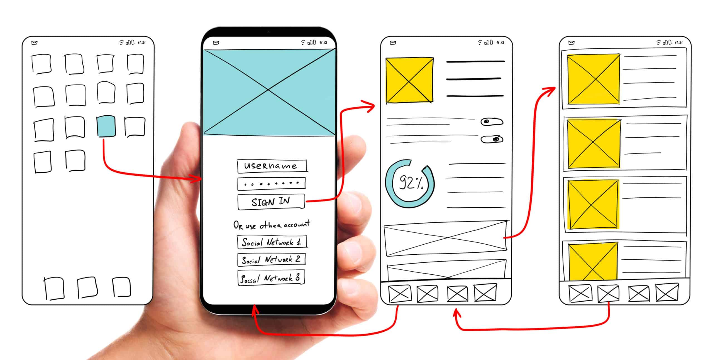
À côté, le UI Designer (User Interface) donne forme à ces idées.
Il conçoit l’apparence des menus, des HUD, des inventaires, des barres de vie, bref tout ce que tu vois à l’écran pour comprendre ce que tu fais.
Il doit jongler entre esthétique et efficacité, car un menu stylé mais incompréhensible, c’est l’échec assuré.
Enfin, l’ergonome intervient parfois pour affiner encore plus l’accessibilité.
Il s’assure que tout est logique, lisible, confortable – que tu joues sur PC, manette, ou même avec une seule main.
C’est lui qui pense aux daltoniens, aux jeunes joueurs, aux vétérans.
Parce qu’un bon jeu, c’est aussi un jeu qui s’adapte à tous.
Si tu n’as pas à réfléchir pour comprendre comment jouer… c’est qu’ils ont fait du bon boulot.
Les Développeurs Indie – Quand Tu Dois Tout Faire Tout Seul
Les développeurs indie (ou indé pour les puristes) sont les véritables couteaux suisses du monde du jeu vidéo.
Quand tu es seul à gérer un projet, tu n’as pas le luxe de te concentrer sur un seul aspect du développement.
En tant que développeur indie, tu vas devoir porter plusieurs casquettes à la fois : programmeur, artiste, sound designer, scénariste, et parfois même chef de projet.
Si tu veux faire ton jeu du début à la fin, tu vas devoir jongler avec tous ces métiers, souvent avec des ressources limitées.
Cela veut dire que, contrairement aux grandes équipes de développement où chaque membre se spécialise dans un domaine, tu vas devoir apprendre un peu de tout.
Tu coderas le gameplay, mais aussi le système d'interface utilisateur (UI), tu créeras des assets graphiques, ou même composer une bande-son si nécessaire.
Ce type de travail peut être incroyablement gratifiant, mais aussi très exigeant.
La gestion du temps et l’organisation deviennent alors cruciales, car, en plus de la création, il te faudra aussi gérer les aspects administratifs comme le financement, le marketing, et la distribution.
Ce que 2 ans de travail indie donne
Cependant, bien que les défis soient nombreux, travailler seul sur un projet indie te permet aussi d'avoir une liberté totale de création.
Tu es le maître à bord de ton propre univers. Tout, de la direction artistique à l’histoire, passe par tes mains.
Cela peut être extrêmement motivant, mais également stressant, surtout lorsque tu dois jongler avec des tâches techniques et créatives en même temps.
Dans ce contexte, le rôle de chef de projet se confond souvent avec celui du développeur, ce qui implique un suivi rigoureux du planning et des objectifs.
Être un développeur indie, c'est faire preuve de polyvalence, d'organisation et de persévérance.
Si tu choisis cette voie, prépare-toi à une aventure où chaque jour t’apporte son lot de défis, mais aussi une immense satisfaction une fois ton jeu terminé et entre les mains des joueurs.
Pour résumer : ce qu'il faut retenir
Dans l’industrie du jeu vidéo, chaque métier a sa place, et tous travaillent main dans la main pour créer une expérience immersive et fun. Que ce soit l’idée du jeu ou la réalisation technique, chaque personne est cruciale dans ce processus complexe. Mais au final, c’est le joueur qui profite du résultat, un sourire aux lèvres, prêt à traverser le dernier niveau… ou à mourir 47 fois d’affilée.
Il faut tout un village pour faire un bon jeu vidéo.
Les métiers impliqués dans la création d’un jeu vidéo
Famille de métiers
Exemples de rôles
Mission principale
Design & Scénario
Game Designer, Level Designer, Scénariste, UI/UX Designer, Narrative Designer, World Builder
Imaginer les règles, niveaux, histoire, expérience utilisateur et monde du jeu
Programmation & Technique
Programmeur, Technical Artist, QA Tester, Data Analyst, Developer Indie
Développer, optimiser, tester et analyser le jeu
Graphisme & Animation
Graphiste 2D/3D, Animateur, Concept Artist, Character Designer
Créer les visuels, personnages, décors et animations
Son & Musique
Sound Designer, Compositeur
Créer les musiques, bruitages et ambiances sonores
Production & Gestion
Chef de projet/Producer, Community Manager, Assistant de production, QA Lead/ Test Manager
Organiser, coordonner, communiquer et adapter le jeu
Support & Accessibilité
Testeur d’accessibilité, Localisateur
Rendre le jeu accessible et adapté à tous les publics
Psychologie & Expérience Utilisateur
UX Designer, UI Designer, Ergonome
Optimiser l'expérience utilisateur, la lisibilité, l’accessibilité et l’ergonomie des interfaces
Organisation & Production
Chef de projet, Assistant de production, QA Lead / Test Manager
Coordonner les équipes, gérer les plannings, budgets et intégration des retours
Développeur Indie
Développeur Indie
Porter plusieurs casquettes : programmation, graphisme, son, scénario, et gestion de projet
De l’atelier au devant de la scène
Après avoir parcouru l’ensemble des métiers qui façonnent un jeu vidéo, des développeurs aux artistes, en passant par les testeurs et les chefs de projet, on comprend mieux à quel point chaque rôle est essentiel pour donner vie à une expérience cohérente et immersive.
Que l’on soit dans une grande équipe ou en mode développeur indie, la diversité des compétences et la collaboration sont la clé pour transformer une idée en projet concret.
Mais une fois toutes ces expertises réunies et le jeu enfin abouti, un nouveau défi se présente : celui de confronter le projet au regard extérieur, de le tester, de l’ajuster et, surtout, de le préparer à son lancement officiel.
C’est justement ce grand saut vers la sortie publique, avec ses phases de bêta-test, ses enjeux marketing et la gestion des retours joueurs, que nous allons explorer dans le prochain chapitre.
Prépare-toi à découvrir comment transformer ton jeu terminé en un véritable événement, prêt à conquérir son public !

 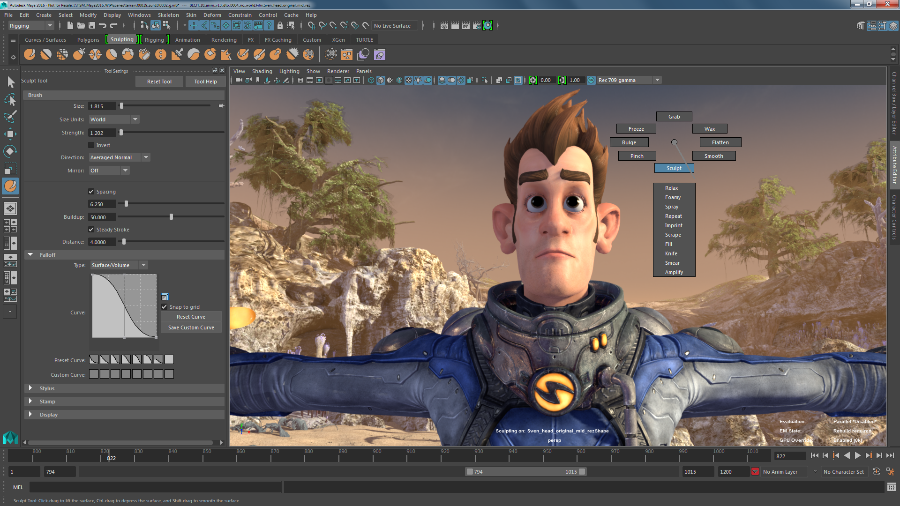
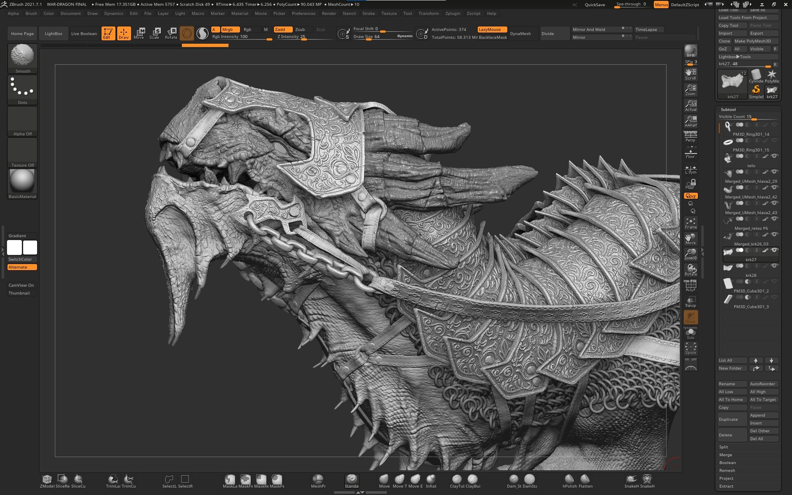
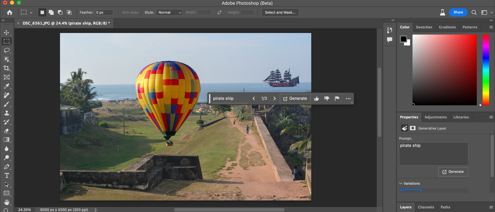
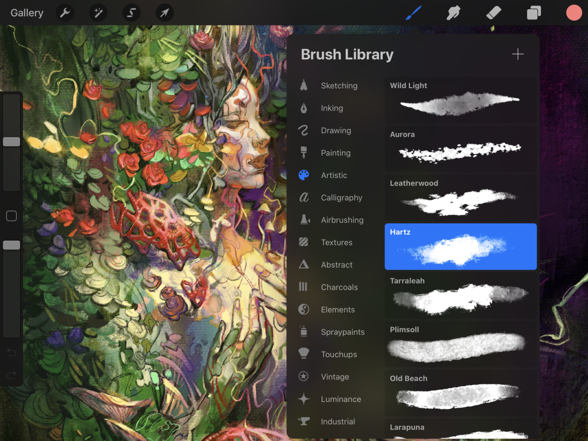
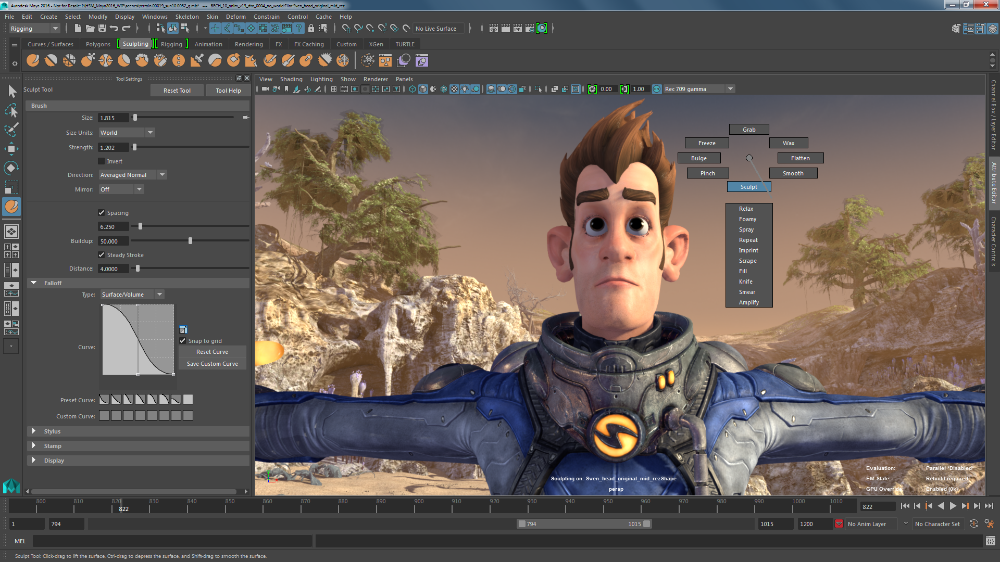
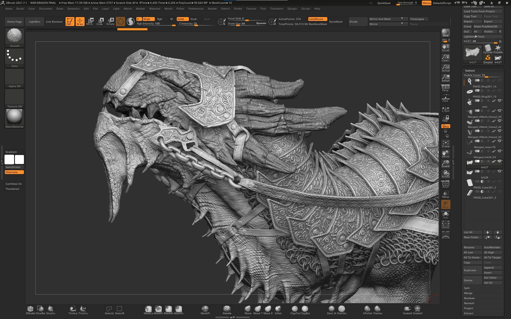
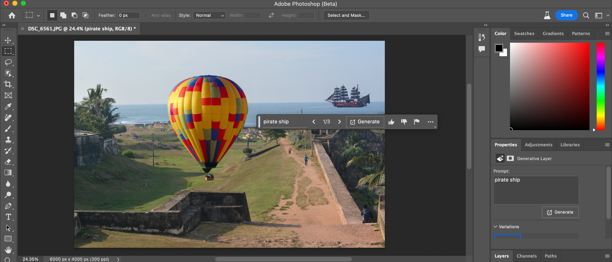
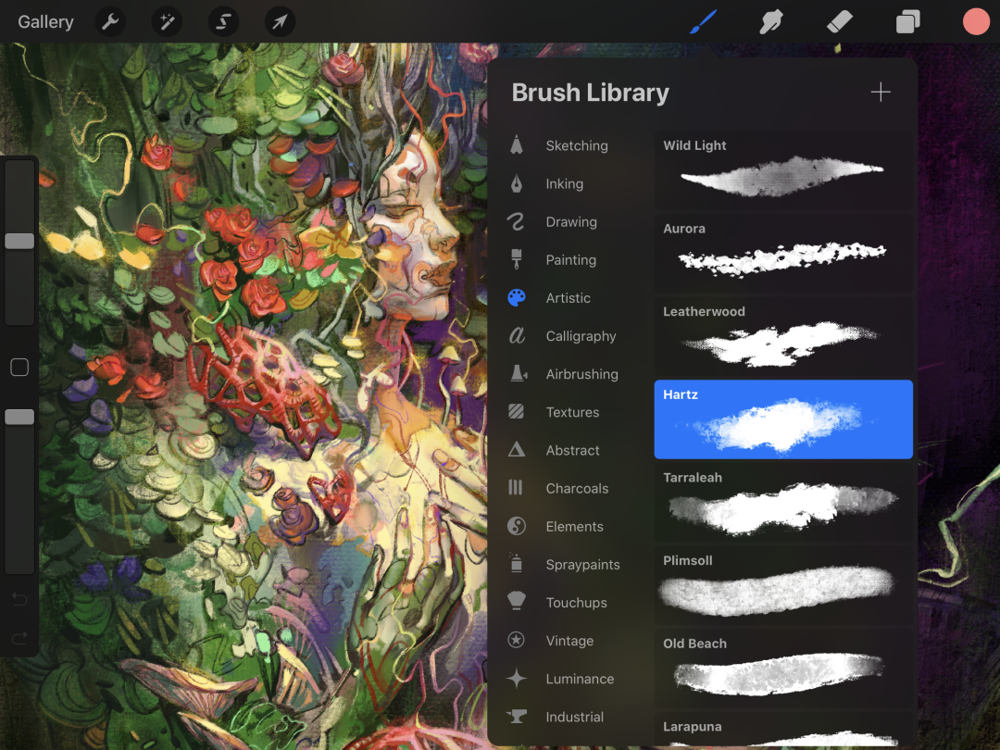